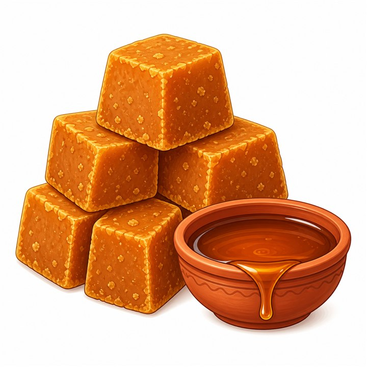

Jaggery
খাঁটি তালের গুঁড় | Palm Jaggery | Girosto
SKU: GIR-068
তালগাছ থেকে নামানো রসের নিজস্ব একটি ঘ্রাণ আছে। সেই রস ধীরে ধীরে জ্বাল দিলে তৈরি হয় গাঢ় রঙের, মাটি-মাটি সুবাসের এক মিষ্টি উপকরণ — তালের গুঁড়। দেখতে সুন্দর করার জন্য অনেক জায়গায় গুঁড়ে ব্লিচিং বা চিনি মেশানোর অভিযোগ শোনা যায়। তাই গিরস্ত বেছে নিয়েছে সহজ পথ: শুধু তালের রস, ঘরোয়া জ্বালে, কোনো কেমিক্যাল বা ভেজাল ছাড়া।
তালের গুঁড় গ্রামবাংলার পুরোনো স্বাদের অংশ। পায়েস, পিঠা কিংবা এক কাপ চায়ে চিনির জায়গায় এর ব্যবহার অনেক পরিবারেই চলে আসছে বহু বছর ধরে। যাঁরা রিফাইন্ড চিনির বদলে প্রাকৃতিক, কম প্রক্রিয়াজাত মিষ্টি খুঁজছেন, তাঁদের রান্নাঘরে এটি হতে পারে একটি নির্ভরযোগ্য সংযোজন।
Currently unavailable
Product availability, appearance, and delivery time may vary. Contact Girosto if you need sourcing or ingredient details.
গিরস্তের তালের গুঁড় কেন বেছে নেবেন?
বাজারে "খাঁটি" লেখা অনেক গুঁড়ই পাওয়া যায়, কিন্তু লেবেল দেখে ভরসা করা কঠিন। গিরস্তের তালের গুঁড়ে চেষ্টা করা হয়েছে প্রক্রিয়া ও উপাদান যতটা সম্ভব সরল রাখার, যাতে আপনি নিশ্চিন্তে পরিবারের রান্নাঘরে ব্যবহার করতে পারেন।
- শুধু তালের রস থেকে তৈরি: রস জ্বাল দিয়ে ঘন করেই গুঁড় বানানো হয়।
- ভেজালমুক্ত: ওজন বাড়াতে চিনি, চুন বা অন্য কিছু মেশানো হয় না।
- ব্লিচিং কেমিক্যাল নেই: রং ফর্সা দেখানোর জন্য কোনো রাসায়নিক ব্যবহার করা হয় না।
- নিজস্ব রং ও ঘ্রাণ অটুট: প্রাকৃতিক তালের গুঁড় সাধারণত গাঢ় বাদামি হয় এবং এর সুবাসও আলাদা। ধবধবে ফর্সা রং এখানে প্রত্যাশিত নয়।
- ঘরোয়া পদ্ধতিতে জ্বাল: বড় কারখানার বদলে পরিচিত ঐতিহ্যবাহী প্রক্রিয়ায় তৈরি।
- একাধিক কাজে ব্যবহারযোগ্য: চা থেকে পায়েস, পিঠা থেকে মিষ্টি রান্না — সবখানেই মানানসই।
তালের গুঁড় কী?
তালের গুঁড় (Palm Jaggery বা Taler Gur) তালগাছের রস সংগ্রহ করে তা জ্বাল দিয়ে ঘন করে বানানো একটি প্রাকৃতিক মিষ্টি। আখের গুঁড় বা খেজুরের গুঁড়ের মতোই এটি চিনির ঐতিহ্যবাহী বিকল্প, তবে উৎস আলাদা হওয়ায় স্বাদ ও গন্ধেও পার্থক্য আছে। তালের গুঁড়ে সাধারণত একটু গভীর, কিছুটা ধোঁয়াটে-ক্যারামেল ধাঁচের মিষ্টতা পাওয়া যায়।
পরিশোধিত চিনির তুলনায় কম প্রক্রিয়াজাত হওয়ায় এতে প্রাকৃতিকভাবে কিছু খনিজ উপাদান থেকে যেতে পারে।
তালের গুঁড়ের পুষ্টিগত বৈশিষ্ট্য
তালের গুঁড়ে সাধারণত আয়রন, ক্যালসিয়াম, পটাশিয়াম ও ম্যাগনেসিয়ামের মতো কিছু খনিজ অল্প পরিমাণে থাকে বলে ধারণা করা হয়। তবে এটি মূলত একটি মিষ্টি উপাদান। ল্যাব রিপোর্ট ছাড়া নির্দিষ্ট পুষ্টিমান নিশ্চিত করে বলা ঠিক নয়, এবং পরিমিত পরিমাণে খাওয়াই সবচেয়ে ভালো।
গিরস্তের তালের গুঁড়ের সুবিধা
রোজকার রান্না ও মিষ্টি খাবারে প্রক্রিয়াজাত চিনির একটি সহজ বিকল্প হিসেবে তালের গুঁড় ব্যবহার করা যায়।
১. রিফাইন্ড চিনির চেয়ে কম প্রক্রিয়াজাত
রস জ্বাল দিয়ে তৈরি হওয়ায় চিনি কারখানার মতো ধাপে ধাপে পরিশোধনের প্রক্রিয়া এতে থাকে না।
২. প্রাকৃতিক খনিজ উপাদানের সম্ভাবনা
আয়রন ও ক্যালসিয়ামের মতো কিছু খনিজ অল্প পরিমাণে থেকে যেতে পারে।
৩. অনন্য স্বাদ
তালের গুঁড় খাবারে একটি আলাদা গভীরতা আনে, যা সাধারণ চিনিতে পাওয়া যায় না।
৪. ঐতিহ্যবাহী খাবারের উপযোগী
তালের ক্ষীর, তালের বড়া ও বিভিন্ন দেশি পিঠা-পায়েসের সঙ্গে এর স্বাদ চমৎকার মানায়।
৫. চা ও পানীয়তে নতুন অভিজ্ঞতা
চিনির বদলে গুঁড় দিয়ে চা বানালে স্বাদে ভিন্নতা আসে।
তালের গুঁড় কীভাবে ব্যবহার করবেন?
তালের গুঁড় পিঠা, পায়েস, পুডিং ও নানা মিষ্টি খাবারে ব্যবহার করে স্বাদ ও মিষ্টতা বাড়াতে পারেন।
- চায়ে চিনির বদলে সরাসরি মিশিয়ে নিতে পারেন।
- পায়েস, ক্ষীর বা হালুয়ায় গলিয়ে দিলে মিষ্টির সঙ্গে সুন্দর সুবাস যোগ হয়।
- তালের বড়া বা অন্যান্য পিঠার মিশ্রণে প্রয়োজনমতো ব্যবহার করুন।
- রান্নায় হালকা মিষ্টতা ও গভীর স্বাদ আনতে সামান্য পরিমাণ দিতে পারেন।
- ছোট টুকরা করে সরাসরিও খাওয়া যায়।
- গলানোর সময় অল্প পানি দিয়ে মৃদু আঁচে জ্বাল দিলে সহজে গলে যায়।
সংরক্ষণের নিয়ম
ঠিকমতো সংরক্ষণ করলে গুঁড়ের স্বাদ ও মান অনেক দিন ভালো থাকে।
- বায়ুরোধী পাত্রে রাখুন।
- সরাসরি রোদ ও স্যাঁতসেঁতে জায়গা থেকে দূরে রাখুন।
- শুকনো ও ঠান্ডা স্থান বেছে নিন।
- গরম ও আর্দ্র আবহাওয়ায় গুঁড় নরম হয়ে যেতে পারে, তাই ব্যবহারের পর পাত্রের মুখ ভালোভাবে বন্ধ করুন।
- প্যাকেটে উল্লেখিত মেয়াদের মধ্যে ব্যবহার করুন।
তালের গুঁড় Specification
|
বিষয় |
বিস্তারিত |
|
পণ্যের নাম |
তালের গুঁড় |
|
Product Type |
Palm Jaggery (Taler Gur) |
|
প্রস্তুতপ্রণালী |
খাঁটি তালের রস জ্বাল দিয়ে ঘরে তৈরি |
|
ভেজাল/মিশ্রণ |
যোগ করা হয় না |
|
কেমিক্যাল/ব্লিচিং |
নেই |
|
সম্ভাব্য খনিজ উপাদান |
আয়রন, ক্যালসিয়াম, পটাশিয়াম (স্বল্প পরিমাণে) |
|
ব্যবহার |
চা, পায়েস, পিঠা, মিষ্টান্ন, রোজকার রান্না |
|
Storage |
ঠান্ডা ও শুকনো স্থানে, বায়ুরোধী পাত্রে |
|
বিক্রেতা |
Girosto – গিরস্ত |